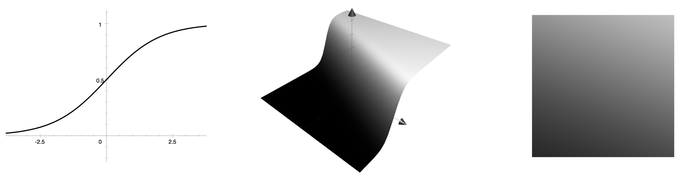

This is an illustrated tour of neural networks in their primordial, untrained state. Neural networks are notoriously difficult beasts to understand, and my aim is to provide both a peek into the inherent beauty of this world, as well as to help you build a bit of intuition to help you shape your initial model — specifically, by an informed choice of hyperparameters. I’ll assume you know that neural networks are tools for machine learning, and that you have a little bit of a coding and math background, but I’ll try to keep things friendly.
A random neural network looks like this:
Figure 1: The graph of a random feedforward neural network.

Why not be even more ambitious and throw in a few more dimensions? Here’s an animated cross-sectional view of another random network:
Figure 2: The 7-dimensional graph of a random feedforward neural network.

These are graphs of a specific type of model called a feedforward neural network, also known as a multilayer perceptron. In this post, I’ll show you how this kind of network is built out of simpler mathematical pieces. I’ll also visually show how many of the hyperparameter values for these models affect their behavior. Hyperparameters are values like the number of layers, layer size, or the distribution used to set the initial weights.
Figure 1 above shows a mathematical function that accepts two inputs as \(x\) and \(y\) coordinates, and provides three outputs as red, green, and blue intensities for a given pixel. If I were to define such a function in Python, it would look a bit like this:
def neural_net(x, y):
# Compute r, g, and b using x and y.
return r, g, bA critical property of neural networks is that they are parametrizable through weight values you can adjust. Mathematically, we could choose to think of a neural network as a function \(f(x, w)\) where both \(x\) and \(w\) are vectors. From this perspective, \(w\) are the weights that are learned during training from a fixed set of data. Once training is complete, the vector \(w\) remains fixed, while the function receives previously-unseen input values for \(x,\) and we think of the \(x\) values as the data from which we predict the desired output.
Feedforward neural networks have a particular form. They’re built with weight matrices \(W_1, W_2, \ldots,\) bias vectors \(b_1, b_2, \ldots,\) and activation functions \(a_1(), a_2(), \ldots.\) A three-layer feedforward network is built like so:
\[\begin{cases} y_0 = x \\ y_1 = a_1(W_1 y_0 + b_1) \\ y_2 = a_2(W_2 y_1 + b_2) \\ y_3 = a_3(W_3 y_2 + b_3) \\ f(x, w) = y_3 \\ \end{cases} \]
1 A Single Layer
Let’s take a look at a simple instance, and build our way up to the more sophisticated picture. Consider a single-layer model with matrix \(W_1\) having weights given by \(w_{11} = 0.4\) and \(w_{12} = 1.0,\) bias term \(b_1=-0.3,\) and the sigmoid activation function:
\[\sigma(x) = \frac{1}{1 + e^{-x}}.\qquad(1)\]
Given inputs \(x_1\) and \(x_2,\) we can summarize the entire neural network as a relatively simple function:
\[f(x) = a_1(W_1x + b_1) = \frac{1}{1+e^{-0.4x_1-x_2+0.3}}.\qquad(2)\]
We can visualize this function as a 3d height plot, shown below in figure 3. Since the output values are constrained to the [0, 1] interval by the sigmoid function, we can also render the same plot as a pixel intensity image — this is basically a bird’s eye view in which values close to 1 appear white, values close to 0 appear black, and values between provide a gradient of grays.
Figure 3: On the left is the sigmoid function \(\sigma(x)\) defined by (1). In the middle is a 3d heightmap of the single-layer, one-output neural network defined by (2). On the right is the overhead view of this same function.
Here we see a single output value because our weight matrix \(W_1\) had a single row. A layer can have multiple outputs, corresponding to multiple rows in its weight matrix, and a correspondingly sized bias vector (eg, \(W_1\) and \(b_1\)). Before the activation function is applied, each output can be seen as either a flat hyperplane (viewed as a heightmap), or as a linear color gradient (viewed as pixel intensities). After the activation, the outputs become nonlinear. If the activation function is \(\sigma(x)\) or \(\tanh(x)\), then the outputs are mapped into a bounded interval; you might say that the hyperplanes have been flattened so that the ends become flat, and there is a section of curvature in the middle.
2 The Second Layer
Let’s dig a bit deeper into the rabbit hole and see what the next layer can do. Suppose the neural network has a single 1-dimensional input, and that it uses a \(\tanh()\) activation function. Then the output of the first layer is a series of similarly-shaped curves at different scales and locations (curves like this are often called s-curves); these are at left in the figure below. If we add together scaled version of these (in other words, if we take a linear combination of these), then we get a curve that, in a sense, has access to as many inflection points (intuitively, “turning points”) as it has inputs. An example is in the middle of the figure below. The final output of the second layer is the result of applying the activation function to this linear combination. The right side of the figure shows \(\tanh()\) applied to the middle of the figure.
Figure 4: Left: three different \(\tanh()\) curves, each with its own weight and bias term. Middle: A linear combination of those three curves. Right: \(\tanh()\) applied to the curve in the middle.

If we have more than a single input variable, then the outputs of the first layer look like those in figure 3 (for a \(\tanh()\) or \(\sigma()\) activation function), and the linear combinations of these can be more interesting since the inflection points turn into inflection lines (or hyperplanes in higher dimensions). The figure below is analogous to figure 4 just above; the change is that we now have two input variables instead of one.
Figure 5: Each of the three sigmoid-based surfaces on the left is a single output value of the first layer of a neural network. The middle surface is a linear combination of these three values that has also been passed through a final \(\tanh()\) activation function. The right image is an overhead view of the middle plot.

If we have three different output values in the range [0, 1], then we can visualize all three at once by interpreting them as independent red, green, and blue channels, like so:
Figure 6: We can simultaneously render three different 2d plots by rending then as red, green, and blue intensities respectively. This is an example using simple sigmoid curves.

The original figures in this article (figure 1 and figure 2) use this technique to render all 3 output values of a neural network in a single image.
To wrap up, here are typical one-layer networks:
Figure 7: Several example one-layer networks.

Below are typical two-layer networks. Each of the following networks has 10 hidden units in its first layer.
Figure 8: Several example two-layer networks.

The weights in all of those have been randomly chosen, and I’ll mention the probability distribution used for them in a few moments.
3 The Deep Part of Deep Learning
This section visualizes how networks change as we add more layers to them.
The word deep in deep learning refers to the fact that many of today’s more sophisticated neural networks tend to have many layers. Continuing naturally in our progression from 1- to 2-layer networks, what do networks with 3 or nore layers look like?
Here’s a progression:
Figure 9: Each column is a network with the same number of layers. Images in the left column have 1 layer each; those in the right column have 10 layers. Within each row, the images show the output of successive layers of the same network. In other words, each image is a single layer added to the image to its left.

In the figure above, each row shows the output of successive layers of a feedforward neural network with random weights. The iages in the first column are from the first layer; those in the second column are from the second layer; and so on. To phrase things intuitively, I’d say that deeper networks can capture a greater level of complexity in terms of behavior.
4 Activation Functions
So far we’ve looked at sigmoidal activation functions — \(\sigma()\) and \(\tanh().\) Another popular choice is \(\text{relu}(x) = \max(x, 0).\)
Figure 10: The function \(\text{relu}(x) = \max(x, 0).\)

In machine learning folklore, it is said that relu-based networks train more quickly than the sigmoidals. This may be true because, for positive \(x\) values, \(\text{relu}(x)\) has a derivative far from zero, whereas both \(\tanh()\) and \(\sigma()\) have small derivatives for large \(x\) values. Functions with small derivatives result in slower convergence via gradient descent, making \(\text{relu}()\) the better choice from this perspective.